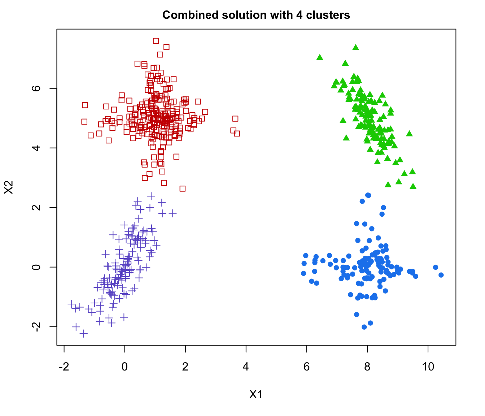
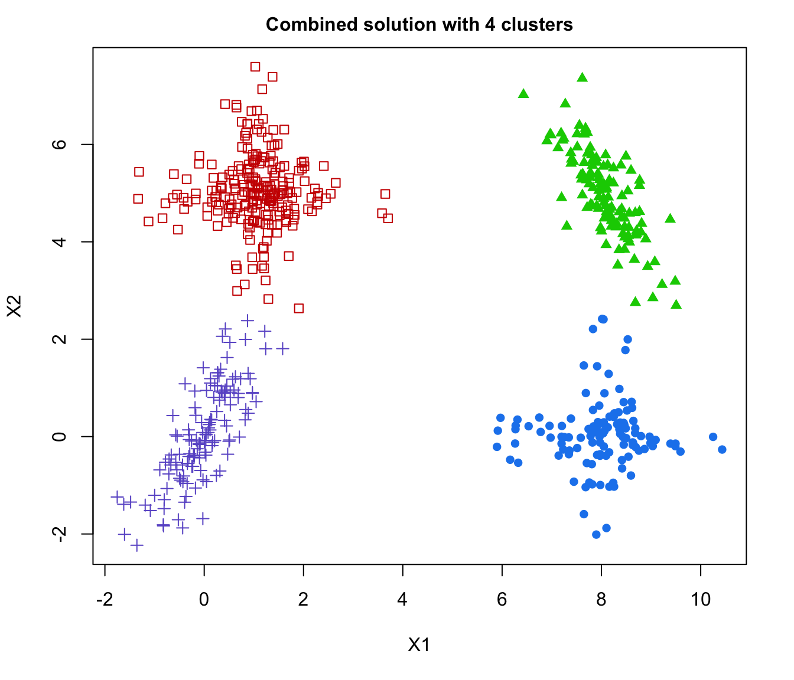

Combining Gaussian Mixture Components for Clustering
clustCombi.RdProvides a hierarchy of combined clusterings from the EM/BIC Gaussian mixture solution to one class, following the methodology proposed in the article cited in the references.
Arguments
- object
An object returned by
Mclustgiving the optimal (according to BIC) parameters, conditional probabilities, and log-likelihood, together with the associated classification and its uncertainty. If not provided, thedataargument must be specified.- data
A numeric vector, matrix, or data frame of observations. Categorical variables are not allowed. If a matrix or data frame, rows correspond to observations and columns correspond to variables. If the
objectargument is not provided, the functionMclustis applied to the givendatato fit a mixture model.- ...
Optional arguments to be passed to called functions. Notably, any argument (such as the numbers of components for which the BIC is computed; the models to be fitted by EM; initialization parameters for the EM algorithm, etc.) to be passed to
Mclustin caseobject = NULL. Please see theMclustdocumentation for more details.
Details
Mclust provides a Gaussian mixture fitted to the data by maximum likelihood through the EM algorithm, for the model and number of components selected according to BIC. The corresponding components are hierarchically combined according to an entropy criterion, following the methodology described in the article cited in the references section. The solutions with numbers of classes between the one selected by BIC and one are returned as a clustCombi class object.
Value
A list of class clustCombi giving the hierarchy of combined solutions from the number of components selected by BIC to one. The details of the output components are as follows:
- classification
A list of the data classifications obtained for each combined solution of the hierarchy through a MAP assignment
- combiM
A list of matrices.
combiM[[K]]is the matrix used to combine the components of the (K+1)-classes solution to get the K-classes solution. Please see the examples.- combiz
A list of matrices.
combiz[[K]]is a matrix whose [i,k]th entry is the probability that observation i in the data belongs to the kth class according to the K-classes combined solution.- MclustOutput
A list of class
Mclust. Output of a call to the Mclust function (as provided by the user or the result of a call to the Mclust function) used to initiate the combined solutions hierarchy: please see theMclustfunction documentation for details.
References
J.-P. Baudry, A. E. Raftery, G. Celeux, K. Lo and R. Gottardo (2010). Combining mixture components for clustering. Journal of Computational and Graphical Statistics, 19(2):332-353.
Examples
data(Baudry_etal_2010_JCGS_examples)
# run Mclust using provided data
output <- clustCombi(data = ex4.1)
# \donttest{
# or run Mclust and then clustcombi on the returned object
mod <- Mclust(ex4.1)
output <- clustCombi(mod)
# }
output
#> 'clustCombi' object:
#> Mclust model: (EEV,6)
#> Available object components: classification combiM combiz MclustOutput
#> Combining matrix (K+1 classes -> K classes): <object_name>$combiM[[K]]
#> Classification for K classes: <object_name>$classification[[K]]
summary(output)
#> ----------------------------------------------------
#> Combining Gaussian mixture components for clustering
#> ----------------------------------------------------
#>
#> Mclust model name: EEV
#> Number of components: 6
#>
#> Combining steps:
#>
#> Step | Classes combined at this step | Class labels after this step
#> -------|-------------------------------|-----------------------------
#> 0 | --- | 1 2 3 4 5 6
#> 1 | 3 & 4 | 1 2 3 5 6
#> 2 | 1 & 6 | 1 2 3 5
#> 3 | 3 & 5 | 1 2 3
#> 4 | 1 & 2 | 1 3
#> 5 | 1 & 3 | 1
# \donttest{
# run Mclust using provided data and any further optional argument provided
output <- clustCombi(data = ex4.1, modelName = "EEV", G = 1:15)
# }
# plot the hierarchy of combined solutions
plot(output, what = "classification")
 



 # plot some "entropy plots" which may help one to select the number of classes
plot(output, what = "entropy")
# plot some "entropy plots" which may help one to select the number of classes
plot(output, what = "entropy")

 # plot the tree structure obtained from combining mixture components
plot(output, what = "tree")
# the selected model and number of components obtained from Mclust using BIC
output$MclustOutput
#> 'Mclust' model object: (EEV,6)
#>
#> Available components:
#> [1] "call" "data" "modelName" "n"
#> [5] "d" "G" "BIC" "loglik"
#> [9] "df" "bic" "icl" "hypvol"
#> [13] "parameters" "z" "classification" "uncertainty"
# the matrix whose [i,k]th entry is the probability that i-th observation in
# the data belongs to the k-th class according to the BIC solution
head( output$combiz[[output$MclustOutput$G]] )
#> [,1] [,2] [,3] [,4] [,5]
#> [1,] 2.828057e-02 2.256054e-24 8.867772e-86 7.080395e-102 8.459454e-122
#> [2,] 9.727840e-01 1.741462e-24 3.144224e-61 2.073383e-81 3.054390e-90
#> [3,] 3.755348e-35 9.994220e-01 3.470709e-14 8.677331e-117 1.448932e-80
#> [4,] 1.853089e-42 1.068300e-81 1.112008e-01 8.887403e-01 5.893101e-05
#> [5,] 3.845124e-35 4.648777e-94 1.034554e-03 9.983910e-01 5.744098e-04
#> [6,] 1.036548e-17 8.888312e-226 4.272575e-72 1.859291e-14 1.000000e+00
#> [,6]
#> [1,] 9.717194e-01
#> [2,] 2.721601e-02
#> [3,] 5.779845e-04
#> [4,] 4.526171e-103
#> [5,] 3.969503e-109
#> [6,] 2.716310e-154
# the matrix whose [i,k]th entry is the probability that i-th observation in
# the data belongs to the k-th class according to the first combined solution
head( output$combiz[[output$MclustOutput$G-1]] )
#> [,1] [,2] [,3] [,4] [,5]
#> [1,] 2.828057e-02 2.256054e-24 8.867772e-86 8.459454e-122 9.717194e-01
#> [2,] 9.727840e-01 1.741462e-24 3.144224e-61 3.054390e-90 2.721601e-02
#> [3,] 3.755348e-35 9.994220e-01 3.470709e-14 1.448932e-80 5.779845e-04
#> [4,] 1.853089e-42 1.068300e-81 9.999411e-01 5.893101e-05 4.526171e-103
#> [5,] 3.845124e-35 4.648777e-94 9.994256e-01 5.744098e-04 3.969503e-109
#> [6,] 1.036548e-17 8.888312e-226 1.859291e-14 1.000000e+00 2.716310e-154
# the matrix describing how to merge the 6-classes solution to get the
# 5-classes solution
output$combiM[[5]]
#> [,1] [,2] [,3] [,4] [,5] [,6]
#> [1,] 1 0 0 0 0 0
#> [2,] 0 1 0 0 0 0
#> [3,] 0 0 1 1 0 0
#> [4,] 0 0 0 0 1 0
#> [5,] 0 0 0 0 0 1
# for example the following code returns the label of the class (in the
# 5-classes combined solution) to which the 4th class (in the 6-classes
# solution) is assigned. Only two classes in the (K+1)-classes solution
# are assigned the same class in the K-classes solution: the two which
# are merged at this step
output$combiM[[5]]
#> [,1] [,2] [,3] [,4] [,5] [,6]
#> [1,] 1 0 0 0 0 0
#> [2,] 0 1 0 0 0 0
#> [3,] 0 0 1 1 0 0
#> [4,] 0 0 0 0 1 0
#> [5,] 0 0 0 0 0 1
# recover the 5-classes soft clustering from the 6-classes soft clustering
# and the 6 -> 5 combining matrix
all( output$combiz[[5]] == t( output$combiM[[5]] %*% t(output$combiz[[6]]) ) )
#> [1] TRUE
# the hard clustering under the 5-classes solution
head( output$classification[[5]] )
#> [1] 5 1 2 3 3 4
# plot the tree structure obtained from combining mixture components
plot(output, what = "tree")
# the selected model and number of components obtained from Mclust using BIC
output$MclustOutput
#> 'Mclust' model object: (EEV,6)
#>
#> Available components:
#> [1] "call" "data" "modelName" "n"
#> [5] "d" "G" "BIC" "loglik"
#> [9] "df" "bic" "icl" "hypvol"
#> [13] "parameters" "z" "classification" "uncertainty"
# the matrix whose [i,k]th entry is the probability that i-th observation in
# the data belongs to the k-th class according to the BIC solution
head( output$combiz[[output$MclustOutput$G]] )
#> [,1] [,2] [,3] [,4] [,5]
#> [1,] 2.828057e-02 2.256054e-24 8.867772e-86 7.080395e-102 8.459454e-122
#> [2,] 9.727840e-01 1.741462e-24 3.144224e-61 2.073383e-81 3.054390e-90
#> [3,] 3.755348e-35 9.994220e-01 3.470709e-14 8.677331e-117 1.448932e-80
#> [4,] 1.853089e-42 1.068300e-81 1.112008e-01 8.887403e-01 5.893101e-05
#> [5,] 3.845124e-35 4.648777e-94 1.034554e-03 9.983910e-01 5.744098e-04
#> [6,] 1.036548e-17 8.888312e-226 4.272575e-72 1.859291e-14 1.000000e+00
#> [,6]
#> [1,] 9.717194e-01
#> [2,] 2.721601e-02
#> [3,] 5.779845e-04
#> [4,] 4.526171e-103
#> [5,] 3.969503e-109
#> [6,] 2.716310e-154
# the matrix whose [i,k]th entry is the probability that i-th observation in
# the data belongs to the k-th class according to the first combined solution
head( output$combiz[[output$MclustOutput$G-1]] )
#> [,1] [,2] [,3] [,4] [,5]
#> [1,] 2.828057e-02 2.256054e-24 8.867772e-86 8.459454e-122 9.717194e-01
#> [2,] 9.727840e-01 1.741462e-24 3.144224e-61 3.054390e-90 2.721601e-02
#> [3,] 3.755348e-35 9.994220e-01 3.470709e-14 1.448932e-80 5.779845e-04
#> [4,] 1.853089e-42 1.068300e-81 9.999411e-01 5.893101e-05 4.526171e-103
#> [5,] 3.845124e-35 4.648777e-94 9.994256e-01 5.744098e-04 3.969503e-109
#> [6,] 1.036548e-17 8.888312e-226 1.859291e-14 1.000000e+00 2.716310e-154
# the matrix describing how to merge the 6-classes solution to get the
# 5-classes solution
output$combiM[[5]]
#> [,1] [,2] [,3] [,4] [,5] [,6]
#> [1,] 1 0 0 0 0 0
#> [2,] 0 1 0 0 0 0
#> [3,] 0 0 1 1 0 0
#> [4,] 0 0 0 0 1 0
#> [5,] 0 0 0 0 0 1
# for example the following code returns the label of the class (in the
# 5-classes combined solution) to which the 4th class (in the 6-classes
# solution) is assigned. Only two classes in the (K+1)-classes solution
# are assigned the same class in the K-classes solution: the two which
# are merged at this step
output$combiM[[5]]
#> [,1] [,2] [,3] [,4] [,5] [,6]
#> [1,] 1 0 0 0 0 0
#> [2,] 0 1 0 0 0 0
#> [3,] 0 0 1 1 0 0
#> [4,] 0 0 0 0 1 0
#> [5,] 0 0 0 0 0 1
# recover the 5-classes soft clustering from the 6-classes soft clustering
# and the 6 -> 5 combining matrix
all( output$combiz[[5]] == t( output$combiM[[5]] %*% t(output$combiz[[6]]) ) )
#> [1] TRUE
# the hard clustering under the 5-classes solution
head( output$classification[[5]] )
#> [1] 5 1 2 3 3 4